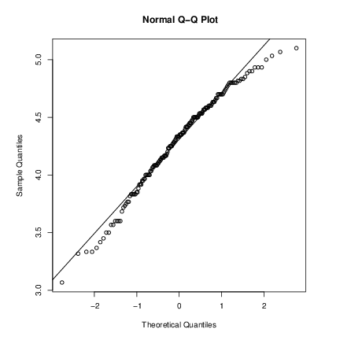

8 Probability distributions
8.1 R as a set of statistical tables
One convenient use of R is to provide a comprehensive set of statistical tables. Functions are provided to evaluate the cumulative distribution function P(X <= x), the probability density function and the quantile function (given q, the smallest x such that P(X <= x) > q), and to simulate from the distribution.
Distribution R name additional arguments beta betashape1, shape2, ncpbinomial binomsize, probCauchy cauchylocation, scalechi-squared chisqdf, ncpexponential exprateF fdf1, df2, ncpgamma gammashape, scalegeometric geomprobhypergeometric hyperm, n, klog-normal lnormmeanlog, sdloglogistic logislocation, scalenegative binomial nbinomsize, probnormal normmean, sdPoisson poislambdasigned rank signranknStudent’s t tdf, ncpuniform unifmin, maxWeibull weibullshape, scaleWilcoxon wilcoxm, n
Prefix the name given here by ‘d’ for the density, ‘p’ for the
CDF, ‘q’ for the quantile function and ‘r’ for simulation
(random deviates). The first argument is x for
dxxx, q for pxxx, p for
qxxx and n for rxxx (except for
rhyper, rsignrank and rwilcox, for which it is
nn). In not quite all cases is the non-centrality parameter
ncp currently available: see the on-line help for details.
The pxxx and qxxx functions all have logical
arguments lower.tail and log.p and the dxxx
ones have log. This allows, e.g., getting the cumulative (or
“integrated”) hazard function, H(t) = - log(1 - F(t)), by
- pxxx(t, ..., lower.tail = FALSE, log.p = TRUE)
or more accurate log-likelihoods (by dxxx(..., log =
TRUE)), directly.
In addition there are functions ptukey and qtukey for the
distribution of the studentized range of samples from a normal
distribution, and dmultinom and rmultinom for the
multinomial distribution. Further distributions are available in
contributed packages, notably SuppDists.
Here are some examples
> ## 2-tailed p-value for t distribution > 2*pt(-2.43, df = 13) > ## upper 1% point for an F(2, 7) distribution > qf(0.01, 2, 7, lower.tail = FALSE)
See the on-line help on RNG for how random-number generation is
done in R.
8.2 Examining the distribution of a set of data
Given a (univariate) set of data we can examine its distribution in a
large number of ways. The simplest is to examine the numbers. Two
slightly different summaries are given by summary and
fivenum
and a display of the numbers by stem (a “stem and leaf” plot).
> attach(faithful) > summary(eruptions) Min. 1st Qu. Median Mean 3rd Qu. Max. 1.600 2.163 4.000 3.488 4.454 5.100 > fivenum(eruptions) [1] 1.6000 2.1585 4.0000 4.4585 5.1000 > stem(eruptions) The decimal point is 1 digit(s) to the left of the | 16 | 070355555588 18 | 000022233333335577777777888822335777888 20 | 00002223378800035778 22 | 0002335578023578 24 | 00228 26 | 23 28 | 080 30 | 7 32 | 2337 34 | 250077 36 | 0000823577 38 | 2333335582225577 40 | 0000003357788888002233555577778 42 | 03335555778800233333555577778 44 | 02222335557780000000023333357778888 46 | 0000233357700000023578 48 | 00000022335800333 50 | 0370
A stem-and-leaf plot is like a histogram, and R has a function
hist to plot histograms.
> hist(eruptions) ## make the bins smaller, make a plot of density > hist(eruptions, seq(1.6, 5.2, 0.2), prob=TRUE) > lines(density(eruptions, bw=0.1)) > rug(eruptions) # show the actual data points
More elegant density plots can be made by density, and we added a
line produced by density in this example. The bandwidth
bw was chosen by trial-and-error as the default gives too much
smoothing (it usually does for “interesting” densities). (Better
automated methods of bandwidth choice are available, and in this example
bw = "SJ" gives a good result.)

We can plot the empirical cumulative distribution function by using the
function ecdf.
> plot(ecdf(eruptions), do.points=FALSE, verticals=TRUE)
This distribution is obviously far from any standard distribution. How about the right-hand mode, say eruptions of longer than 3 minutes? Let us fit a normal distribution and overlay the fitted CDF.
> long <- eruptions[eruptions > 3] > plot(ecdf(long), do.points=FALSE, verticals=TRUE) > x <- seq(3, 5.4, 0.01) > lines(x, pnorm(x, mean=mean(long), sd=sqrt(var(long))), lty=3)

Quantile-quantile (Q-Q) plots can help us examine this more carefully.
par(pty="s") # arrange for a square figure region qqnorm(long); qqline(long)
which shows a reasonable fit but a shorter right tail than one would expect from a normal distribution. Let us compare this with some simulated data from a t distribution
x <- rt(250, df = 5) qqnorm(x); qqline(x)
which will usually (if it is a random sample) show longer tails than expected for a normal. We can make a Q-Q plot against the generating distribution by
qqplot(qt(ppoints(250), df = 5), x, xlab = "Q-Q plot for t dsn") qqline(x)
Finally, we might want a more formal test of agreement with normality (or not). R provides the Shapiro-Wilk test
> shapiro.test(long)
Shapiro-Wilk normality test
data: long
W = 0.9793, p-value = 0.01052
and the Kolmogorov-Smirnov test
> ks.test(long, "pnorm", mean = mean(long), sd = sqrt(var(long)))
One-sample Kolmogorov-Smirnov test
data: long
D = 0.0661, p-value = 0.4284
alternative hypothesis: two.sided
(Note that the distribution theory is not valid here as we have estimated the parameters of the normal distribution from the same sample.)
8.3 One- and two-sample tests
So far we have compared a single sample to a normal distribution. A much more common operation is to compare aspects of two samples. Note that in R, all “classical” tests including the ones used below are in package stats which is normally loaded.
Consider the following sets of data on the latent heat of the fusion of ice (cal/gm) from Rice (1995, p.490)
Method A: 79.98 80.04 80.02 80.04 80.03 80.03 80.04 79.97
80.05 80.03 80.02 80.00 80.02
Method B: 80.02 79.94 79.98 79.97 79.97 80.03 79.95 79.97
Boxplots provide a simple graphical comparison of the two samples.
A <- scan() 79.98 80.04 80.02 80.04 80.03 80.03 80.04 79.97 80.05 80.03 80.02 80.00 80.02 B <- scan() 80.02 79.94 79.98 79.97 79.97 80.03 79.95 79.97 boxplot(A, B)
which indicates that the first group tends to give higher results than the second.

To test for the equality of the means of the two examples, we can use an unpaired t-test by
> t.test(A, B)
Welch Two Sample t-test
data: A and B
t = 3.2499, df = 12.027, p-value = 0.00694
alternative hypothesis: true difference in means is not equal to 0
95 percent confidence interval:
0.01385526 0.07018320
sample estimates:
mean of x mean of y
80.02077 79.97875
which does indicate a significant difference, assuming normality. By default the R function does not assume equality of variances in the two samples. We can use the F test to test for equality in the variances, provided that the two samples are from normal populations.
> var.test(A, B)
F test to compare two variances
data: A and B
F = 0.5837, num df = 12, denom df = 7, p-value = 0.3938
alternative hypothesis: true ratio of variances is not equal to 1
95 percent confidence interval:
0.1251097 2.1052687
sample estimates:
ratio of variances
0.5837405
which shows no evidence of a significant difference, and so we can use the classical t-test that assumes equality of the variances.
> t.test(A, B, var.equal=TRUE)
Two Sample t-test
data: A and B
t = 3.4722, df = 19, p-value = 0.002551
alternative hypothesis: true difference in means is not equal to 0
95 percent confidence interval:
0.01669058 0.06734788
sample estimates:
mean of x mean of y
80.02077 79.97875
All these tests assume normality of the two samples. The two-sample Wilcoxon (or Mann-Whitney) test only assumes a common continuous distribution under the null hypothesis.
> wilcox.test(A, B)
Wilcoxon rank sum test with continuity correction
data: A and B
W = 89, p-value = 0.007497
alternative hypothesis: true location shift is not equal to 0
Warning message:
Cannot compute exact p-value with ties in: wilcox.test(A, B)
Note the warning: there are several ties in each sample, which suggests strongly that these data are from a discrete distribution (probably due to rounding).
There are several ways to compare graphically the two samples. We have already seen a pair of boxplots. The following
> plot(ecdf(A), do.points=FALSE, verticals=TRUE, xlim=range(A, B)) > plot(ecdf(B), do.points=FALSE, verticals=TRUE, add=TRUE)
will show the two empirical CDFs, and qqplot will perform a Q-Q
plot of the two samples. The Kolmogorov-Smirnov test is of the maximal
vertical distance between the two ecdf’s, assuming a common continuous
distribution:
> ks.test(A, B)
Two-sample Kolmogorov-Smirnov test
data: A and B
D = 0.5962, p-value = 0.05919
alternative hypothesis: two-sided
Warning message:
cannot compute correct p-values with ties in: ks.test(A, B)